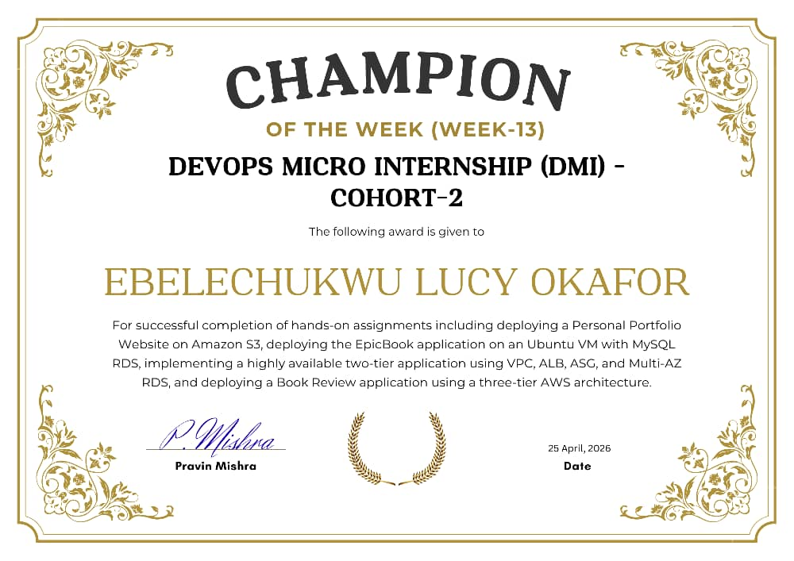

The story behind the engineer — where I come from, what drove my transition into tech, and where I am going.
My name is Ebelechukwu Lucy Okafor — a Cloud and DevOps Engineer based in Nigeria with a passion for building infrastructure that is secure, scalable, observable, and automated.
But my story did not start in tech. For over 6 years I worked in executive administration — managing high-level operations, coordinating across teams, handling board-level communications, and keeping complex projects on track. Those years taught me discipline, attention to detail, and how to think strategically under pressure — skills that made me a better engineer than I ever expected.
In 2024 I made a deliberate decision to transition into cloud computing. I joined Digital Witch Support Community where I trained in cloud security with a specialisation in Azure and GCP, completing hands-on projects in PCI-DSS and HIPAA compliance. That training lit a fire in me and I knew this was the path forward.
In January 2026 I joined the DevOps Micro Internship (DMI) Cohort 2 run by Pravin Mishra at The Cloud Advisory — a 14-week intensive programme integrated with Agentic AI concepts. Over 50+ practical assignments covering Linux, Git, AWS, Azure, Terraform, Ansible, Docker, Kubernetes, CI/CD, and observability, I went from deploying my first Nginx static site to orchestrating 8-service microservices applications on Kubernetes with full CI/CD automation and a complete observability stack.
As the App / Docker Lead on the DMI Group 5 team project — Spring PetClinic Microservices — I led containerisation of all 8 services, managed Docker builds and image tagging strategy, fixed critical docker-compose YAML errors, implemented healthcheck-based startup ordering, and pushed all images to AWS ECR for the Kubernetes team to deploy. I worked alongside 10 other engineers across 6 disciplines and delivered a production-grade platform end to end.
Among the proudest moments of my entire journey was being awarded Champion of the Week for Week 13 — personally signed by Pravin Mishra himself. Week 13 was one of the most demanding weeks in the programme, covering advanced AWS deployments: a highly available two-tier architecture with VPC, ALB, ASG, and Multi-AZ RDS; EpicBook on Azure with MySQL RDS; and a three-tier AWS architecture. Out of the entire Cohort 2, my submission stood out. That recognition told me clearly — working hard, documenting everything, and going beyond the minimum always gets noticed.
I graduated in May 2026 with a Certificate of Completion (ID: DMIC2-202601-030), a Google Cloud Professional Cloud Security Engineer certification, and a portfolio of real production deployments that prove I can do the work — not just talk about it.
I am currently building my freelance DevOps practice, targeting Fintech, SaaS, Healthtech, and E-commerce clients across EMEA markets. My goal is to build infrastructure that developers can trust and users never notice — because it simply works.

Awarded by Pravin Mishra · DMI Cohort 2 · 25 April 2026
In 2024 I left 6+ years of executive administration to pursue cloud computing. I started with Digital Witch Cloud Security training, earned my Google Cloud Professional Cloud Security Engineer certification, then joined DMI Cohort 2 where I completed 50+ practical projects and was named Champion of the Week. Today I build and operate real cloud infrastructure for clients across EMEA. The transition was deliberate. The work speaks for itself.